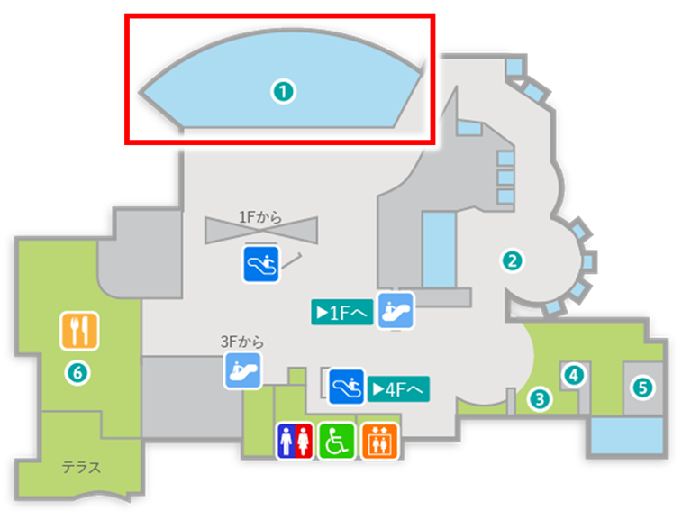

ヒョウ柄模様と長～い尾びれが特徴の、ゆったり泳ぐおとなしいサメです。
トラフザメは、ジンベエザメ科に属する底生性のサメで、幼魚のころは白と黒のシマ模様をしており、英語名の「Zebra Shark（シマウマサメ）」はそこから来ています。成長すると体にヒョウのような模様が現れ、体の半分近くを占める長い尾びれが特徴です。 日本での記録は非常に限られており、佐渡島、千葉県館山、土佐湾、沖縄県宮古島などの報告のみですが、南西諸島ではダイバーによる水中での目撃例が複数あります。 今回の個体は、鹿児島本土の開聞岳ふもとの定置網で捕獲されたオス（全長185cm）で、鹿児島本土では初めての確認例と考えられています。黒潮に乗って移動してきたものとみられています。 水族館に運ばれたときは痩せていましたが、翌日からすぐにエサを食べるほど元気を回復。約80日間の予備飼育を経て、大水槽での展示が始まりました。
このトラフザメは、鹿児島本土ではとてもめずらしい記録なんです。黒潮に乗ってやってきたのかもしれません。実は、トラフザメは絶滅危惧種に指定されていて、今では世界中で個体数が減っています。そんな貴重なサメを間近で見られるのはとても特別なことなんですよ。水槽の中でゆったり泳ぐ姿を、ぜひじっくり観察してみてくださいね。

（飼育員 ゆっきー）
インド太平洋の熱帯・亜熱帯の浅い海。 日本では主に南西諸島に分布。今回のような鹿児島本土での確認はきわめて珍しい例です。
Q1：トラフザメの英語名「Zebra Shark」（シマウマ サメ）は、何に由来しているでしょう？
Q2：トラフザメの尾びれの長さは、体のどのくらいの長さでしょう？
かごしま水族館で最も大きな水槽で、水量は1500㎥です。ジンベエザメやマグロやカツオなど黒潮の流れに乗って回遊する魚を展示しています。
